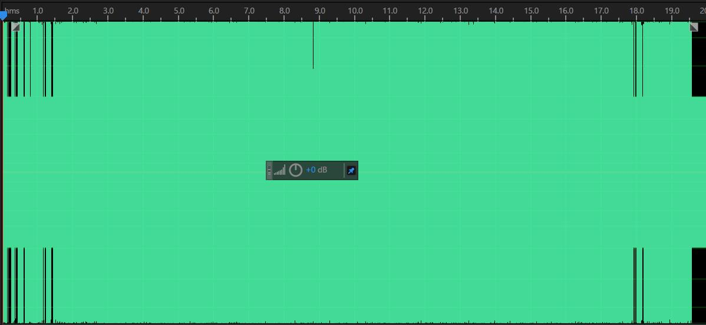
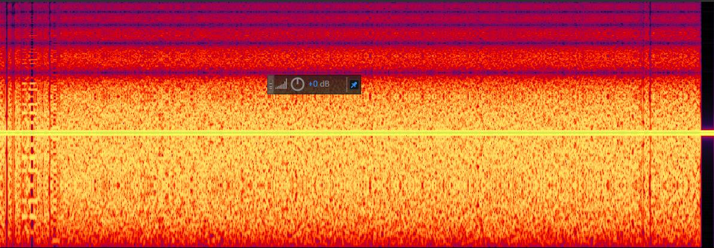
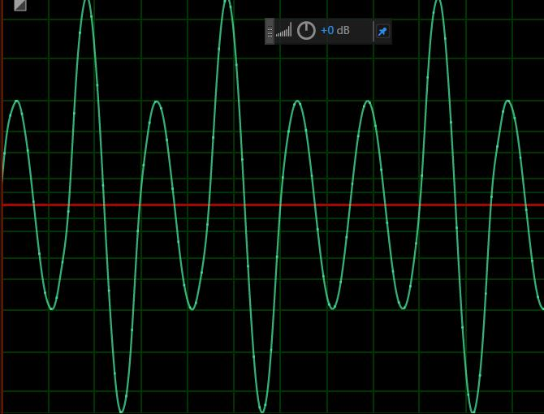
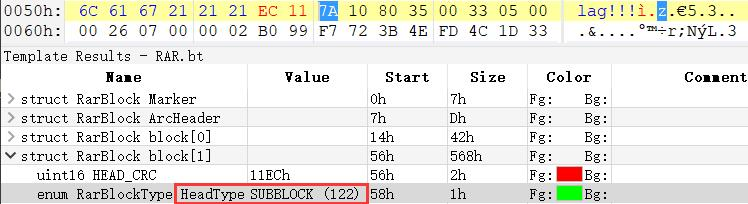

Unpleasant_music
解题思路¶
- 初始拿到一个 WAV 文件，使用音频编辑软件打开，发现是一个单声道音频，波形布满了整个框咕
 - 既然这么满，就看看频谱吧咕。但是并没有发现，SAD
 - 放大波形，发现其有一定的规律~像是 01 序列
 - 手动解码是不可能的咕，写个程序跑一下
1 2 3 4 5 6 7 8 9 10 11 12 13 14 15 16 17 18 19 20 21 22 23 24 25 26 27 28 29 30 31 32 33
import wave, codecs import numpy as np wavfile = wave.open(u'music.wav',"rb") params = wavfile.getparams() nframes = params[3] # 采样点数 datawav = wavfile.readframes(nframes) # 读取音频，字符串格式 wavfile.close() datause = np.fromstring(datawav, dtype = np.short) # 将字符串转化为短整型 result_bin, result_hex = '', '' mx = 0 for i in range(len(datause) - 1): if datause[i] > mx: mx = datause[i] try: if(datause[i] < 0 and datause[i+1] >= 0): if (mx - 24000 > 0): result_bin += '1' mx = datause[i+1] else: result_bin += '0' mx = datause[i+1] except: break for i in range(0, len(result_bin), 4): result_hex += hex(int(result_bin[i : i + 4], 2))[2:] # result_hex 开头为 Rar file_rar = open("result.rar","wb") file_rar.write(codecs.decode(result_hex, 'hex_codec')) file_rar.close() - 生成的 RAR 里面有一个
nnnnoflag.txt，里面没有 flag 啊咕！（掀桌 -
严肃）RAR 由可变长的块组成，这些块的没有固定的先后顺序，但要求第一个块必须是标志块并且其后紧跟一个归档头部块。每个块均以以下字段开头
名称 大小 描述 HEAD_CRC 2 bytes CRC of total block or block part HEAD_TYPE 1 byte Block type HEAD_FLAGS 2 bytes Block flags HEAD_SIZE 2 bytes Block size ADD_SIZE 4 bytes Optional field – added block size -
HEAD_TYPE 的值及对应的块类型
HEAD_TYPE 描述 0x72 marker block 0x73 archive header 0x74 file header 0x75 old style comment header 0x76 old style authenticity information 0x77 old style subblock 0x78 old style recovery record 0x79 old style authenticity information 0x7a subblock 0x7b terminator -
用 010 Editor 打开
result.rar发现有一块的 HEAD_TYPE 是0x7a
 - 想来这应该不是常见的块类型，前面已经出现了标志块和归档头部块，就改成
0x74试试咕。诶嘿嘿~ RAR 文件里面出现了一个STM文件 - 用
file看看咕~发现是 PNG 文件，修改一下文件后缀，得到一个被截掉一半的二维码
- 然后常规操作改一下 PNG 图片的高就可以了咕~⭐扫描二维码得到 flag！